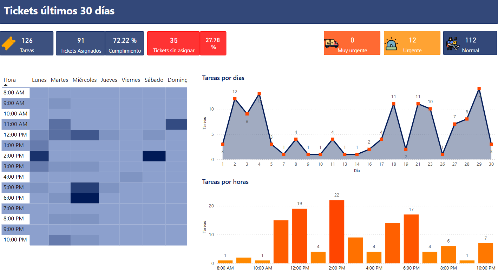
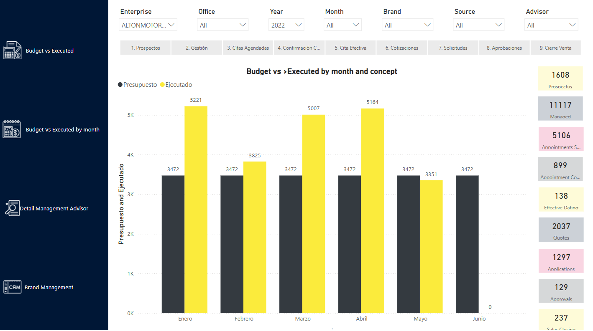
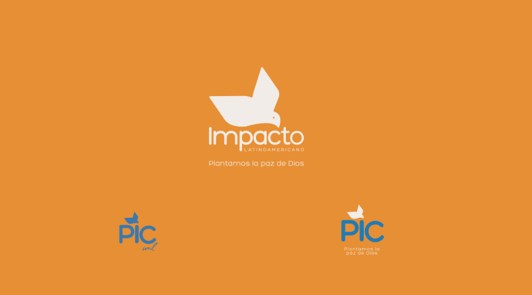
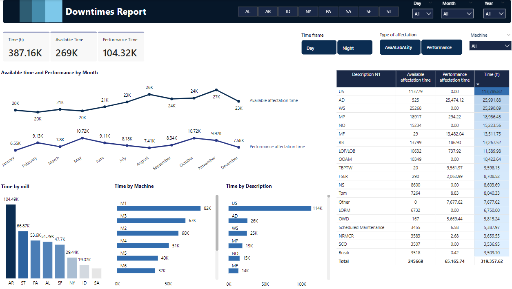
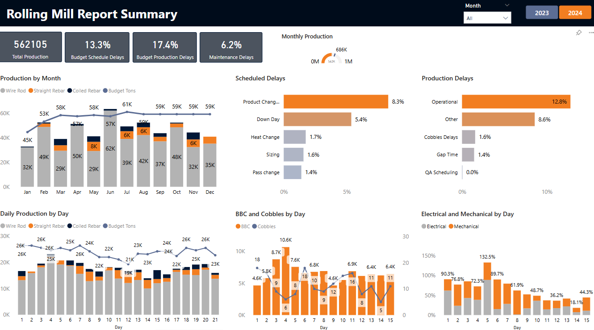
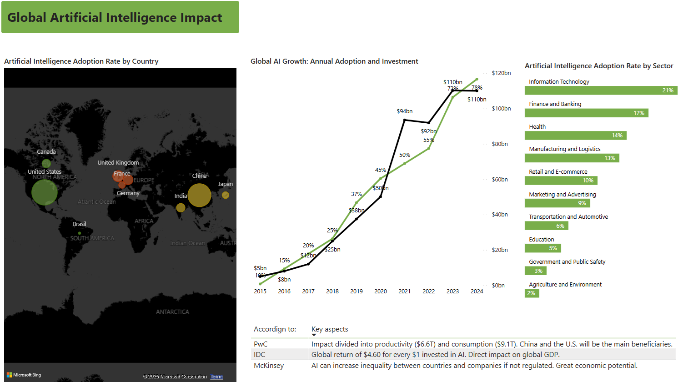

Below are some of the most impactful projects I have led. For each, I utilized diverse data sources such as Excel, SharePoint, and SQL Management Studio. Throughout these projects, I focused on data cleansing, ensuring data quality, and applying effective visualizations tailored to the specific needs of the audience and objectives.
This project was carried out to show the behavior of the external and internal requirements (tickets). In addition, you can view their distribution by months and hours to optimize the use of resources.
Watch the example
This example shows the most relevant information obtained from a CRM. Here you can visualize and interact with the assigned budget vs. achieved, the detail of the management by consultant, the number of quotes, leads, closed sales, etc. This report contains several segmenters that will help you understand the information from the general to the detail.
Watch the example
This project was carried out for a pro-church organization. Through it, you can view various metrics in different Latin American countries. Each country is personalized with its flag, includes details for each country and is available in Spanish and English.
Watch the example
This Power BI report provides a comprehensive analysis of machine downtimes, highlighting the duration, frequency, and causes of stoppages. It helps identify trends, optimize maintenance schedules, and reduce unplanned production interruptions.
Watch the example
This Power BI project provides insights into the rolling mill process, downtime analysis and production efficiency. It visualizes key metrics such as material throughput, operational time, and defect rates, enabling stakeholders to identify bottlenecks, optimize processes, and ensure consistent product quality.
Watch the example
This report shows the evolution and economic investment in artificial intelligence, the countries with the highest adoption of this technology, and the sectors that have been most impacted.
Watch the example
